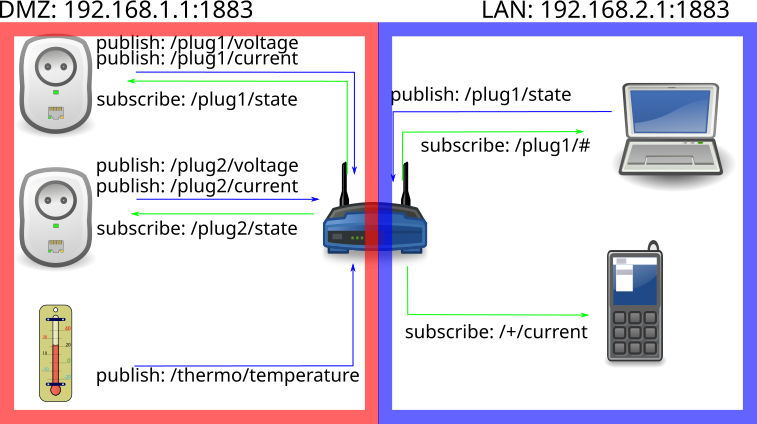

Wykład 4 — protokół to za mało, potrzebna jest umowa
Wydział Inżynierii Środowiska i Inżynierii Mechanicznej
Uniwersytet Przyrodniczy w Poznaniu
Pytanie modułu: jak zapisać umowę między urządzeniem, brokerem i odbiorcami, żeby dało się ją później zmienić bez zatrzymywania systemu?
retained.Fot. Archives New Zealand, CC BY-SA 2.0
Dla skali: samo zestawienie sesji TLS i nagłówki HTTP to zwykle setki bajtów do kilku kB na żądanie — przy ładunku rzędu kilkudziesięciu bajtów. Utrzymane połączenie MQTT płaci ten koszt raz.
To nie znaczy „HTTP jest zły”
HTTP jest właściwym wyborem tam, gdzie jest stałe zasilanie i model żądanie–odpowiedź pasuje do zadania: bramy, panele administracyjne, interfejsy serwerowe.
Problemem nie jest protokół, tylko jego użycie w roli, do której go nie projektowano.

Ademant, MQTT single broker multiple listener, Wikimedia Commons, CC BY-SA 4.0.
Protokół powstał w 1999 r. we współpracy Andy’ego Stanforda-Clarka (IBM) i Arlena Nippera (wówczas Arcom Control Systems). MQTT jest dziś standardem OASIS: wersja 3.1.1 (2014) została również opublikowana jako ISO/IEC 20922:2016, a wersja 5.0 jako standard OASIS w 2019 r.
Dwa bajty to minimalny rozmiar nagłówka stałego: jeden bajt typu pakietu i flag oraz co najmniej jeden bajt pola Remaining Length, kodowanego jako liczba zmiennobajtowa o długości 1–4 bajtów.
Do tego dochodzi nagłówek zmienny — przede wszystkim nazwa tematu, a przy QoS > 0 identyfikator pakietu — w MQTT 5.0 jeszcze właściwości (co najmniej 1 B). MQTT 5 pozwala zastąpić długi temat aliasem (Topic Alias), liczbą o długości 2 B.
Realny narzut pakietu PUBLISH zależy więc głównie od długości nazwy tematu. Binarny jest nagłówek MQTT; format ładunku (np. JSON, CBOR lub Protobuf) określa osobny kontrakt danych.
Ten sam pusty ładunek, dwa drzewa tematów (MQTT 3.1.1):
| Temat | Długość | Pakiet PUBLISH |
|---|---|---|
lab/z1/d1/t |
11 zn. | 17 B (QoS 1) |
laboratorium/zespol-1/urzadzenie-1/telemetria/pomiar |
52 zn. | 58 B (QoS 1) |
Różnica 41 B na komunikat wynika wyłącznie z długości tematu. Przy publikacji co 10 s przez 365 dni to 129,3 MB rocznie (123,3 MiB) dodatkowych bajtów PUBLISH. Bez ACK, TCP/IP i TLS; czasu pracy radia nie wyliczymy z samej liczby bajtów.
Wniosek: segmenty tematu mają być krótkie, ale znaczące. Nie skracamy do szumu (a/b/c), nie rozdymamy do zdania.
Fot. Dsimic, CC BY-SA 4.0
Temat niesie kierunek i klasę komunikatu. Jedno i drugie zapisujemy jawnie.
| Temat | Kto publikuje | retained |
Zawartość |
|---|---|---|---|
lab/{zespol}/{urzadzenie}/telemetry |
tylko urządzenie | nie | pomiary okresowe |
lab/{zespol}/{urzadzenie}/state |
tylko urządzenie | tak | stan i atrybuty: wersja firmware, okres próbkowania, adres |
lab/{zespol}/{urzadzenie}/command |
klient / platforma | nigdy | polecenia; urządzenie wyłącznie subskrybuje |
lab/{zespol}/{urzadzenie}/status |
urządzenie (online po połączeniu) i broker w jego imieniu (Will offline) |
tak | online / offline po nieuprzejmym rozłączeniu |
Reguła porządkująca: kto publikuje, ten nie subskrybuje tego samego tematu. Złamanie tej zasady daje pętle, których nie widać w logu, bo każdy komunikat z osobna wygląda poprawnie.
Komunikat retained jest domyślnie dostarczany każdemu nowemu subskrybentowi zaraz po subskrypcji.
Polecenie retained zostanie więc wykonane ponownie przy każdym restarcie urządzenia, które po połączeniu znów subskrybuje temat poleceń. Usunięcie: publikacja pustego ładunku z flagą retain.
To nie jest błąd teoretyczny
W systemie z pompą, grzałką albo zaworem ma to konsekwencje fizyczne: urządzenie wraca po przerwie w zasilaniu i samo załącza wyjście na podstawie polecenia sprzed godzin.
Objaw zgłaszany przez użytkownika brzmi: „pompa włącza się sama”. Przyczyna leży w jednej fladze protokołu.
Stan natomiast musi być retained — po to, żeby nowy odbiorca (pulpit po odświeżeniu) od razu wiedział, w jakim stanie jest urządzenie, nie czekając na kolejny cykl.
| Mechanizm | Kiedy stosujesz | Koszt |
|---|---|---|
| QoS 0 — co najwyżej raz | telemetria o wysokiej częstości, gdzie strata próbki jest dopuszczalna | brak potwierdzeń; nie wiesz, czy komunikat dotarł |
| QoS 1 — co najmniej raz | stan, zdarzenia, polecenia w prostych układach | możliwe duplikaty — odbiorca musi być idempotentny |
| QoS 2 — dokładnie raz | operacje, których powtórzenie jest kosztowne | czterofazowa wymiana; największe opóźnienie i zużycie energii |
| Retained | stan, który nowy subskrybent musi znać natychmiast | nieaktualny stan „żyje” do nadpisania |
| Last Will | wykrycie nieuprzejmego rozłączenia | ustawiany przy CONNECT; nie zadziała po DISCONNECT z kodem 0x00 (w MQTT 5 kod 0x04 celowo go wyzwala) |
| Keep alive | detekcja martwego łącza TCP | przy braku innego ruchu krótki okres = częstsze PINGREQ = więcej energii; broker rozłącza po 1,5 × keep alive |
| Session Expiry (MQTT 5) | odbiór zaległości po powrocie urządzenia | broker utrzymuje stan sesji — zużycie pamięci serwera |
Specyfikacja opisuje trzy poziomy jako: co najwyżej raz, co najmniej raz i dokładnie raz. Żaden poziom nie gwarantuje dostarczenia przy trwale przerwanym łączu. Zaległe QoS 1 i 2 są dostarczane po powrocie tylko przy zachowanej sesji (Clean Session = 0, w MQTT 5 Session Expiry > 0).
QoS działa na jednym odcinku: subskrybent dostaje min(QoS publikacji, QoS subskrypcji).
I jeszcze jedno ograniczenie
Platforma, której użyjemy w module 06, obsługuje wyłącznie QoS 0 i 1. Projekt nie może zakładać semantyki „dokładnie raz” na styku z platformą — idempotencja odbiornika jest obowiązkowa, a nie opcjonalna.
Koszt energetyczny rośnie z liczbą wymian: QoS 2 to cztery pakiety zamiast jednego, a radio musi pozostać włączone przez cały czas wymiany.
Fot. Shixart1985, CC BY 2.0
Ten komunikat da się zinterpretować bez dokumentacji obok. To jest cel.
schema — numer wersji kontraktu. Bez niego nie da się wprowadzić zmiany bez przestoju wszystkich odbiorców.ts — czas w UTC, ISO 8601 ze strefą. Czas lokalny w telemetrii jest źródłem błędów na przełomie czasu zimowego i letniego: godzina 02:30 występuje dwa razy albo wcale._c, _pct) — odbiorca nie musi zgadywać ani pytać.seq — licznik rosnący; pozwala wykryć lukę i duplikat z QoS 1. Po restarcie licznik się zeruje — dlatego przechowujemy go nieulotnie albo łączymy z identyfikatorem rozruchu.device, fw — identyfikacja źródła, przydatna przy diagnozie „która partia urządzeń psuje dane”.Zmiana kontraktu po wdrożeniu wymaga aktualizacji wszystkich stron. Pole schema pozwala zrobić to etapami.
Zmiana zgodna wstecz — dodanie pola
schema bez zmian.Zmiana niezgodna — inne znaczenie albo jednostka
schema do 2.Najgorszy wariant
Zmiana jednostki z °C na dziesiąte części °C bez podniesienia schema.
Odbiorca nadal parsuje komunikat poprawnie i wykresy się rysują — ale wartości są dziesięciokrotnie za duże. Alarmy progowe zaczynają się wyzwalać fałszywie, a historia zostaje wymieszana z danymi w innej jednostce.
Jednostka w nazwie pola pomaga człowiekowi, ale niczego nie wymusza. Wymusza dopiero walidacja schematu (np. JSON Schema z dopuszczalnym zakresem) na brzegu — moduł 05. Standardowy zapis jednostek: SenML, RFC 8428.
Polecenie zawiera identyfikator żądania. Urządzenie zapamiętuje ostatnie wykonane identyfikatory — nieulotnie, bo broker może ponowić komunikat po restarcie — i ignoruje powtórzenia.
Dzięki temu QoS 1 z duplikatami przestaje być problemem, a odpowiedź może być bezpiecznie wysłana ponownie.
Odpowiedź wysyłamy za każdym razem — powtórzenie odpowiedzi jest nieszkodliwe, a jej brak wygląda jak awaria.
ClientID wzajemnie się rozłączają — objaw wygląda dokładnie jak „niestabilna sieć” i potrafi kosztować dzień diagnozy.Prefiks dev/, test/ lub prod/ porządkuje nazwy, ale nie zapewnia izolacji. Izolację daje osobny broker albo ACL z osobnymi poświadczeniami.
Minimalna reguła ACL dla urządzenia
publikacja: lab/z1/d1/telemetry, lab/z1/d1/state, lab/z1/d1/status · subskrypcja: lab/z1/d1/command
Wildcard # dla publikacji objąłby także command, dlatego tematy zapisu wyliczamy jawnie. Urządzenie nie ma powodu czytać cudzej telemetrii ani publikować poleceń.
coaps, port 5684).CoAP ma własny tryb potwierdzany: komunikaty confirmable korzystają z ACK i retransmisji. Komunikaty non-confirmable nie zapewniają takiego potwierdzenia.
Reguła wyboru
MQTT — strumień telemetrii i polecenia do wielu odbiorców. CoAP — zapytanie o bieżącą wartość lub obserwacja jednego zasobu. AMQP — kolejkowanie między usługami serwerowymi.
Kontrakt nieprzetestowany jest dokumentem, nie umową. Pięć dowodów:
mosquitto_sub z jawnie podanym QoS.retained.offline w temacie status po czasie nie dłuższym niż ok. 1,5 × keep alive (plus Will Delay Interval w MQTT 5) — dowód działania Last Will.| Warstwa | Technologia | Zastosowanie |
|---|---|---|
| Krótki zasięg | BLE, Zigbee, Z-Wave | urządzenia noszone, instalacje domowe, czujniki lokalne |
| Daleki zasięg | LoRaWAN, NB-IoT, LTE-M, Sigfox 0G* | rolnictwo, monitoring środowiskowy, infrastruktura miejska |
| Protokół aplikacyjny | MQTT (pub/sub) | strumień telemetrii, polecenia, wielu odbiorców |
| Protokół aplikacyjny | CoAP (żądanie/odpowiedź, UDP) | pojedyncze odczyty na mikrokontrolerach |
| Protokół aplikacyjny | HTTP | przede wszystkim bramy i urządzenia ze stałym zasilaniem |
| Zaplecze | AMQP | kolejki między usługami serwerowymi |
* Operator Sigfox 0G (UnaBiz) — przyszłość sieci niepewna; zob. moduł 03.
Zasada porządkująca cały ten wykład i poprzedni: im dalej chcesz przesłać dane, tym mniej ich przesyłasz i tym dłużej urządzenie przeżyje — a im mniej przesyłasz, tym ważniejsze, żeby każdy przesłany bajt był jednoznaczny.
temperature_c oraz schema: 1. Wymień dwa różne momenty, w których ten błąd może zostać wykryty, i powiedz, ile danych zdąży się do tego czasu zepsuć przy raportowaniu co 10 s.Co zostaje z tego modułu
retained, polecenie nigdy.schema, czas w UTC, jednostka w nazwie pola, licznik seq.Moduł 05 — brzeg sieci
Umowa jest zapisana. Teraz ktoś musi jej pilnować: sprawdzić, czy komunikat jest zgodny z kontraktem, odrzucić to, czego nie wolno zapisać, i przekazać dalej resztę — z jawnym powodem każdego odrzucenia.
Internet Rzeczy · Wykład 4 — MQTT i kontrakt danych